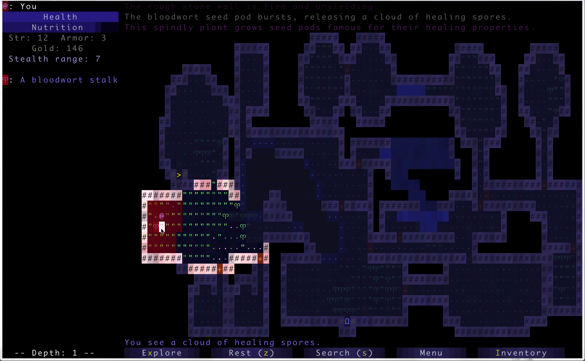
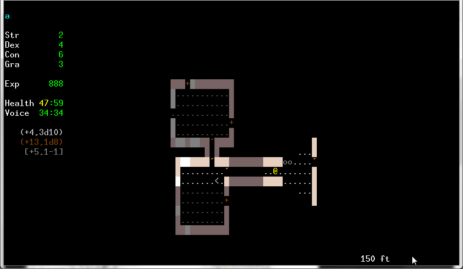
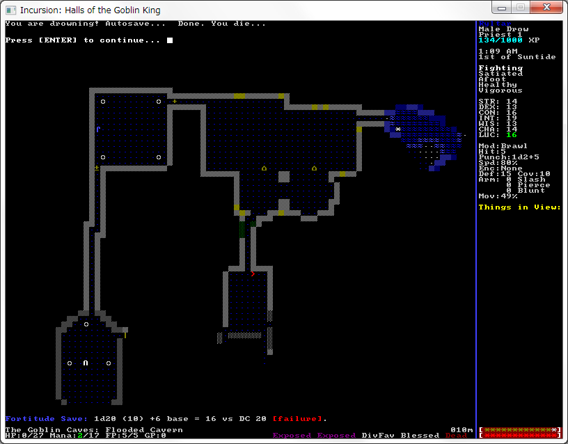
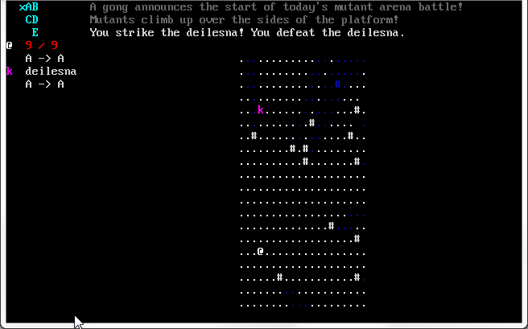
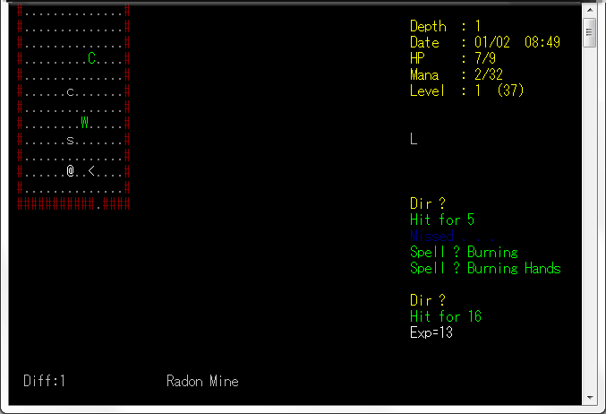

トップ
Roguelike Advent Calendar 2016 24日目 demon、triangle wizard紹介＋その他ちょっと紹介
ちょっとした紹介(brogue,sil,incursion,Mutant Arena,quest for the unicorn)
brogue紹介
作者:Brian Walker氏
公式サイト:https://sites.google.com/site/broguegame/
シンプルなローグライク
いろいろギミックが豊富
グラフィック(疑似アスキー？)が凝ってる

おそらく最初に登場するギミック、癒しの雲。
他にもさまざまなギミックが登場する。
sil紹介
作者:half氏
公式サイト:http://www.amirrorclear.net/flowers/game/sil/
日本語wiki:http://www.wikihouse.com/silwiki/index.php?FrontPage
どんなゲーム？:
ほぼ作り直したbandバリアント。
ピンチにならないように行動するバランス、
スキル制や騒音システムがある。
時間制限があり、ターン経過で階層制限が深くなっていく。(制限階より上に行こうとしても制限階に出る)
20階(1000ft)にいるモルゴスからシルマリルを取り戻せばクリア
緊急回避手段が無い、鍛冶でアイテムを制作出来る(アーティファクト装備も作れる)。
敵が賢く、通路に何も考えず入ってこなかったり、
敵がかなり硬く、逃げ回る

敵は通路に入ってこない。
今ならプレゼントで強いアイテム(が入っているかもしれない)箱が貰える！
incursion紹介
作者:Julian Mensch氏、Richard Tew氏
公式サイト:http://www.incursion-roguelike.net/
どんなゲーム？:d20システムベース。
最下層にいるラスボスを倒せばクリア？
d20ベースなので交渉したり、武器に毒を塗ったり出来る。
残念ながらバグだらけのまま更新停止してしまった。
バグが非常に多く、定期的にバックアップを取りながら進むのを推奨(セーブデータ破壊バグや進行不可能になるバグが普通にある)
魔法が使えて祈りが使えて仲間が神から遣わされるプリーストが強かったような記憶(バグで詰んだが)

って雑にやってたら溺れた。
24 Hours in the Mutant Arena紹介
作者:dscreamer氏
ダウンロード:http://forums.roguetemple.com/index.php?topic=3850.0

どんなゲーム？:特定の場所に立つ事で攻撃する。
(どの場所に移動すればいいかはランダムで決定、↓のABCDEを組み合わせて作られる、敵も同じシステムで攻撃する。)
EDBDE
DCACD
BAxAB
DCACD
EDBDE
A -> Cなら敵の縦か横→敵の斜めに移動すれば攻撃出来る。
C -> Eなら敵の斜め→敵の斜め2マスに移動すれば攻撃出来る。
B -> Bなら敵の縦横1マス先に移動→敵の縦横1マス先に移動(つまり待機)で攻撃出来る。
さらにおまけ
Quest for the unicorn紹介？
作者:Mike Riley氏
公式サイト:http://www.elf-emulation.com/rcs/unicorn5/index.html

どんなゲーム？:クソゲー(2時間くらいやってクラッシュでセーブデータ消滅してゴミ箱シュート)
何がクソか)
何すればいいか全くわからない
表示がおかしい(キャラメイクで10/10→9/9にすると9/910になるとか、三桁目以降が表示されないとか
ステータスやアイテム欄を見ただけでターン消費、魔法をキャンセルしてもターン消費
命中率が異常に低い、キャラメイクでdexに全振りしたドワーフ戦士で25%、振っていなければもっと低い……。
クラッシュしてセーブ消滅
仲間が地上でしか使えない
意味があるのか無いのかよくわからない要素
単純にバランスが悪い
その他もろもろ。
その癖26年前から開発が続いている。